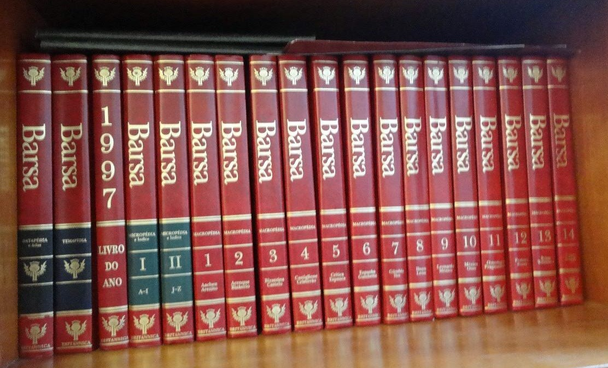
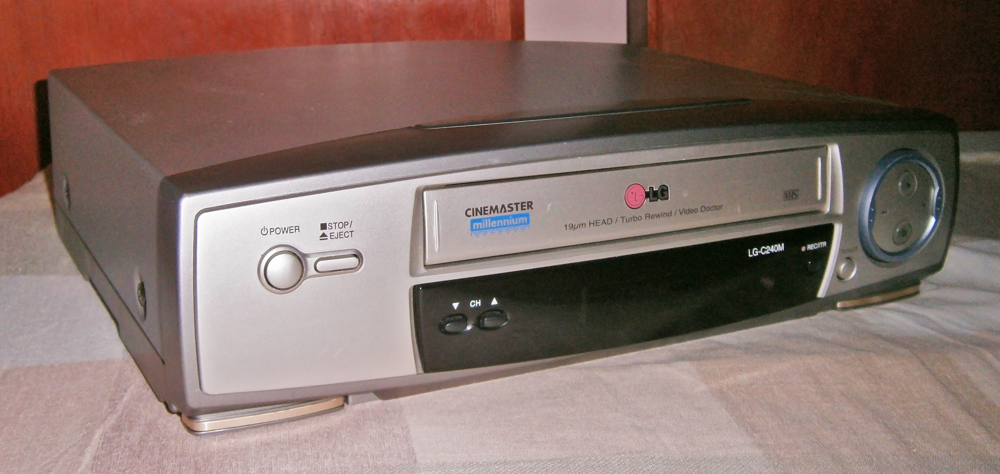

Imagine um mundo distante, mas muito parecido com o lugar onde você mora. Nele, se você quiser mandar uma mensagem, enviar fotos, jogar seu game preferido, ouvir música, fazer compras ou assistir a um filme, terá que encontrar uma solução que não seja pela internet. Parece impossível, certo?
Você deve estar pensando: esse pessoal só pode estar de brincadeira comigo! Mas acredite, em uma realidade não tão distante assim, usar a internet era para poucos. Além disso, a conexão era muito diferente daquilo que estamos acostumados atualmente.
Aqueles que nasceram entre o final da década de 1980 e início dos anos 90, sabem exatamente do que estamos falando, já que, talvez, essa tenha sido a última geração a usar a famosa (e irritante) internet discada, além, é claro, de clássicos como os extintos ICQ, MSN, Orkut e outras ferramentas.
Agora, se você faz parte das gerações que nasceram a partir dos anos 2000, saiba que você está no grupo daqueles que já chegaram em um mundo mais conectado, o que significa que a conexão é mais rápida, entre as diversas barreiras tecnológicas; os nativos digitais.
Você já tentou fazer o exercício de perguntar aos seus tios, pais, irmãos mais velhos ou qualquer outra pessoa, como era o mundo antes da internet e das maravilhas tecnológicas como o WhatsApp, os roteadores wi-fi, essa infinidade de aplicativos e as redes sociais?
Pergunte a eles como era ter que procurar por um “orelhão” (você sabe o que é isso?). Estamos falando daqueles telefones públicos que você ainda encontra nas ruas de algumas cidades.
Não é nada fácil usar o telefone público, ainda mais na década de 1990, acredite! As fichas acabavam em um segundo e limitavam as conversas a poucos minutos de duração. Pensando na facilidade que é fazer uma chamada de vídeo pelo smartphone nos dias de hoje, dá para dizer que o “modus operandi” dos telefones públicos era “tenso”.
Mas, voltando à internet, é preciso dizer: você ficaria estressado com as conexões lentas, com o mundo sem Wi-Fi e sem smartphone. Por isso mesmo, neste conteúdo, vamos te apresentar a esse “velho mundo novo”! Será como uma viagem no tempo.
O mundo antes da criação da internet, essa rede mundial que conecta todos os computadores e smartphones, era certamente mais complicado. Por falta de acesso a dados digitalizados e por não existir a conectividade tão acessível como hoje, diversas tarefas eram trabalhosas.
Nesse mundo, uma simples pesquisa sobre a vida de Bill Gates, por exemplo, seria feita em uma enciclopédia, um antigo livro, grande e pesado, que reunia informações e conhecimentos diversos. Os trabalhos escolares também eram feitos com pesquisas em livros físicos e a comunicação com pessoas em outros países era muito complicada e cara.
Veja como a internet realmente revolucionou todo o processo de pesquisa, acesso à informação e comunicação! Hoje, basta digitar ou falar “biografia Bill Gates” no campo de busca do Google e imediatamente o buscador apresenta mais de um milhão de resultados.
A internet entrega em suas mãos todos os dias, no conforto do seu sofá, tudo o que você precisa saber. Além disso, a web é também a ferramenta mais importante do mundo para entretenimento, games, consumo, trabalho e outras demandas.
Vamos apresentar ou, simplesmente, relembrar mais algumas coisas, lugares, negócios e tecnologias que, com a criação da internet, definitivamente deixaram de existir e que já podem ser considerados peças de museus, de tão ultrapassados que estão.
Locadoras – Antigamente, se você quisesse assistir a um filme, um lançamento, teria que se planejar. Primeiro, era preciso reservar a fita ou o DVD na locadora, que tinha apenas algumas cópias dos filmes mais procurados. Para pegar o filme, era preciso pagar por diária, e você tinha data e hora para devolver o DVD, e se não fizesse no prazo, pagava multa. Nada parecido com o bom streaming de hoje, não é mesmo? Nessa época, Netflix era apenas um sonho de ficção.
Locadora de games – Muitas locadoras de filmes também contavam com uma seção de games, com CDs ou cartuchos que tinham jogos caros, inacessíveis para muitas pessoas. Existiam duas possibilidades: jogar na locadora ou levar a fita para a casa.
Telefone público – Hoje, quando você se depara com um deles, também chamados de “orelhão” (por causa do formato parecido com uma orelha gigante), é difícil encontrar um que esteja funcionando. Para usá-los, você tinha que ter fichas (que se pareciam com moedas) ou cartões, com seus créditos, que desapareciam rapidinho se a chamada fosse para outro Estado e, mais ainda, se fosse para fora do país. A comunicação era um desastre e a chamada quase sempre caía na hora mais importante da conversa.
Páginas Amarelas – Lista Telefônica – A dificuldade para encontrar uma pizzaria ou uma loja de games perto da sua casa ou na sua cidade era imensa. Você tinha que recorrer a uma lista telefônica, especialmente às páginas amarelas, nas quais os comércios e empresas anunciavam seus contatos. Você consegue visualizar esse mundo sem o Google? Sim, era difícil!
LPs, DVDs e Fitas K7 – Seus artistas preferidos lançavam os álbuns por estes canais e eles custavam caro. Não havia um acesso fácil a uma música como no YouTube. Nessa época, um brasileiro tinha que esperar meses para que o novo álbum de uma banda americana chegasse por aqui e, provavelmente, só chegaria às capitais, como São Paulo e Rio de Janeiro.
As tecnologias de comunicação foram as mais impactadas com a criação da internet. Se hoje você está acostumado com um roteador de wi-fi, conexão rápida e troca de mensagens instantâneas, naquele tempo existiam outros modos de falar, enviar mensagens e interagir com as pessoas. Veja alguns:
A união entre a internet e um computador portátil, que cabe na palma da mão e que serve para tudo, inclusive para telefonar, revolucionou nossa relação com todos os tipos de conteúdos, entre eles games, músicas, vídeos e fotos. A internet contribuiu muito para que o smartphone fosse tão importante em nossas vidas.
Antes de a internet ser de qualidade e tão acessível, ou seja, enquanto a rede mundial de computadores se transformava, todos os aparelhos estavam separados. As pessoas viajavam com uma câmera digital para fotografar, um notebook para escrever, editar ou conectar a uma internet discada, um “Game Boy” para se divertir com uns poucos jogos que coubessem na memória, um MP3 Player para escutar músicas “baixadas” e até com uma agenda eletrônica (sim, isso também existiu).
Já pensou carregar em uma bolsa vários dispositivos diferentes para ter o que hoje você possui na palma da sua mão, com o seu smartphone? É surreal!
É como dizem: é bom lembrar o passado, mas não há nada como o presente! Hoje, vivemos num mundo altamente conectado, sem barreiras geográficas, onde tudo ficou mais fácil e dinâmico.
Temos interação imediata com outras pessoas pela internet, compramos sem sair de casa e jogamos com gente do mundo inteiro pelo computador ou pelo smartphone. Sem dúvidas, a vida é muito melhor agora!
Uma transformação tão significativa como essa para a nossa sociedade precisava mesmo ser comemorada. Por isso, foi instituído o Dia Mundial da Internet, celebrado em 17 de maio.
A data foi estabelecida pela ONU – Organização das Nações Unidas, em 2006, para mostrar que a inclusão digital é uma conquista da humanidade.
Esse dia foi escolhido porque também marcou outra conquista importante para as comunicações, que foi a criação do telégrafo, um equipamento de 1865, usado pelos países para mandar e receber mensagens de uma forma segura e eficiente.
O telégrafo foi muito importante por ser considerado o equipamento que originou, basicamente, as telecomunicações, ou seja, ele foi o precursor da internet.
O telégrafo emitia sinais elétricos de um emissor para um receptor. Estes sinais eram decodificados no ponto de destino, entregando a informação. Foi considerado tão eficiente que foi usado pelos órgãos de inteligência dos Estados Unidos e como um “provedor privado” de comunicação. Resumindo de forma bem simples, o telégrafo era a internet daquela época.
Atualmente, 193 países-membros e mais de 800 parceiros privados trabalham pelo aprimoramento, expansão e estabelecimento da internet no mundo. Eles são os membros da União Internacional de Telecomunicações, que funciona como uma Agência do Sistema das Nações Unidas. Já são mais de 154 anos de trabalho para manter o mundo conectado.
Só para ter a dimensão da internet em nossos dias, no mundo inteiro são mais de 2,2 bilhões de usuários no Facebook. Todos os dias, mais de 125 milhões de pessoas acessam o Twitter para compartilhar informação.
O modo como nos relacionamos com as pessoas mudou, o dinheiro passou a ser virtual, a prestação de serviços inovadores e disruptivos surgiu com diversas startups e passamos a compartilhar nossas vidas nas redes sociais. E as mudanças não param por aí… Tem muito mais a caminho!
A história de pesquisa e desenvolvimento das primeiras conexões similares à internet começou com objetivos militares, na Guerra Fria. Mas foi só em 1969, na Califórnia, que a internet passou a ser usada da forma que fazemos hoje, para conectar pessoas.
A tecnologia percorreu um longo caminho de evolução e a internet ganhou uso comercial em 1987. Já em 1989, um cara chamado Tim Berners-Lee criou a web, rede mundial de computadores, com um conceito global, livre e colaborativo que democratizou o acesso à internet.
Hoje, a realidade é muito incrível, com números impressionantes. De acordo com um estudo da ONU, o uso da internet segue crescendo globalmente. Mais de 4,1 bilhões de pessoas usam a rede mundial, isso equivale a mais de 53% da população do planeta.
Para o futuro, podemos esperar uma conexão à internet móvel ainda mais rápida, com o avanço do 5G; além de uma realidade em que a internet das coisas será marcante. Isso significa um mundo onde absolutamente TUDO estará conectado à internet, com uma alta transmissão de dados, mais conexões simultâneas, mais tráfego online e muitos dispositivos diferentes.
Daqui a alguns anos, nossas casas serão totalmente inteligentes, com computadores, smartphones, eletrodomésticos, tudo conectado à rede, facilitando a rotina e criando novos padrões de comportamento e consumo para a sociedade.
O wi-fi do futuro estará ligado à inteligência artificial, com conexões sem fio para grandes ambientes e repetidores de sinal muito mais eficientes. Os roteadores para conexão mesh, que já usam inteligência artificial, serão cada vez mais aprimorados para garantir bandas maiores de acordo com os fluxos de dados. Essa será a próxima geração de conectividade do mundo, e ela está mais próxima do que você imagina.